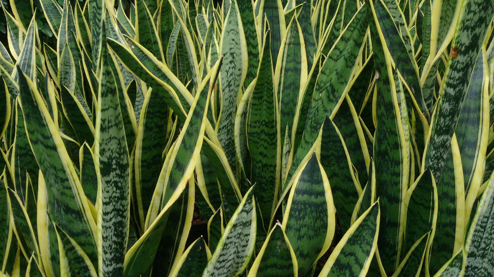

Gentle Greenery
Snake
Snake plants grow vertically and can reach up to 6 feet in height. They have an interesting pattern on their leaves, which are banded with squiggly lines of light and dark green.
Warning! Snake plants are slightly toxic to cats and dogs, since they contain saponins. Please keep them out of reach of your pets!

Light: Snake plants are very hardy, and can tolerate a wide range of light conditions. However, indirect light is ideal.

Water: These plants only need light waterings, letting the soil dry completely in between. Be especially careful to not overwater your snake plants to prevent root rot! When watering, do not wet the leaves.
Fun facts: According to research by NASA, snake plants help filter air, making them a great houseplant. In the past, snake plants were used to make bowstrings because of their strong plant fibers. Snake plants are also unique because they convert carbon dioxide to oxygen during the day and night. Most other plants usually convert carbon dioxide to oxygen during the day and convert oxygen to carbon dioxide at night.
. . .
